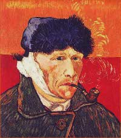
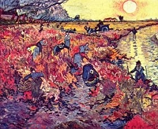

|
Courrier des Lecteurs
2011 - saison 1/3
|
|
 |
18/2/2011 - A.A.2
Vincent Van Gogh, une
courte enquête
cdl cdl cdl
Navigation, sommaire
thématique
cliquer ici
Dialogue antérieur -
Dialogue suivant
| |
[Cet article fait
suite à celui-ci]
Cette question n'est sans doute en voie
de résolution que grâce à la valeur financière actuelle - des dizaines
de millions d'euros l'oeuvre, jusqu'à 140 millions au maximum en 2011
- de tableaux
peints fin XIXème par un artiste génial, virtuose inspiré
de la couleur, de la touche et de la composition.
Dans ce contexte, il est difficile de ne
pas oser quelques mots sur la naissance et le destin de la collection.
Vincent Van Gogh s'est suicidé par balle à trente-sept ans.
Malgré ses nombreuses amitiés, il ne
bénéficia de son vivant que d'un succès limité à ses pairs, sinon à la
toute fin de sa vie, timidement.
Au sujet de ce retard de reconnaissance
publique, le rôle de son environnement intime a de quoi interroger.
Ce questionnement sur l'entourage du
maître a fait l'objet d'hypothèses mais aussi d'oeuvres de fiction qui
ont surtout colporté des clichés sans apporter des lumières, ce qui
est une rude tâche de toute façon.
|
|

Autoportrait à l'oreille
coupée
Vincent Van Gogh
1889 |
|
| |
La réalisation probable de faux Van Gogh par
la jeune Blanche Derousse (lien
vers une recherche Google), à l'initiative du Dr. Paul Gachet
et de son fils Paul-Louis, semble davantage qu'une simple hypothèse
depuis la découverte en 2003 d'un dessin caché derrière un miroir
acheté par des chalands dans une brocante (lire le dernier lien ci-contre). Vincent avait prévenu ("Je pense
qu'il ne faut aucunement compter sur le Dr Gachet", écrivait-il à
son frère Théo, soulignant deux fois aucunement). Les doutes
contemporains remontent au moins aux années 1960.
[Le versant intime]
Mais les éventuels faux ne sont pas le seul
versant douteux, d'autant plus que les Gachet ne faisaient pas partie
des intimes de Vincent Van Gogh.
Théo était marchand d'art. Vincent lui aurait
envoyé 550 peintures et des centaines de dessins (information non
recoupée précisément). Aujourd'hui, ce
fonds artistique de toute façon très volumineux représente des milliards d'euros. Un pactole
artistique sans
équivalent.
|
|
Sur ces sujets, une
source parmi d'autres, sur Insecula.com.
Lien.
Un
autre lien, accablant.
Enfin et surtout,
cette page avec vidéo, consacrée au livre La folie Gachet du
critique Benoît Landais. |
|
| |
Or une seule vente du vivant de Vincent
est attestée à ce jour. Ce n'est même pas l'un des acheteurs de
Théo mais la peintre Anna Boch, soeur d'Eugène Boch, un ami direct de
Vincent, qui acheta La vigne
rouge à Montmajour (ci-contre) pour 400 francs de 1890, soit
environ 1 200€ actuels.
C'était au début de l'année du décès de
Vincent (en juillet 1890), année particulière car elle fut aussi celle d'un commencement
timide de reconnaissance publique (un article publié dans Mercure de
France).
Une question demeure donc plus que brûlante :
pendant toutes ces années, comment Théo, marchand d'art, a-t-il pu
échouer à vendre des oeuvres de son frère pourtant reconnu et admiré
par des peintres aussi importants que Gauguin (qui, lui, vendait ses
toiles), Pissaro, Signac et de très
nombreux autres dont un certain Claude Monet qui se serait exclamé,
début 1890, "Quel grand peintre !"
Qui pouvait ignorer la valeur du travail
du maître hollandais ? Sûrement pas un marchand d'art au faîte de
son métier après dix ans d'expérience au sein du milieu artistique.
Pire : Théo, peu après le décès de
son frère et peu avant sa propre mort, organise dans une urgence
bien soudaine une exposition où il convie des journalistes, ce qu'il aurait déjà pu
faire depuis des années...
En effet, on n'oubliera pas que vers
1882, Théo avait cessé de verser une pension "inconditionnelle" à Vincent.
Il lui "échangeait" ses versements contre des tableaux. C'est
ainsi qu'il constitua son propre fonds artistique.
|
|

La vigne rouge à
Montmajour
Vincent Van Gogh
1888 |
|
| |
Certes, Théo, "riche mais pingre"
selon Wouter van der Veen (voir lien ci-contre) mais très sympathique
selon d'autres, versait quand même à
Vincent des sommes relativement confortables, du moins à l'époque d'Auvers-sur-Oise,
qui dura soixante-dix jours.
Mais s'il avait réellement cherché à
promouvoir son frère et à vendre ses oeuvres plutôt qu'à les
accumuler, Vincent aurait peut-être pu voler de ses propres ailes, et alors... adieu la collection. Si vraiment Théo était
à la fois sympa et pingre, quel
dilemme.
[Johanna et l'oreille
coupée]
Le même Théo s'est marié à Johanna
Gesina Bonger après une cour épistolaire de soixante-dix lettres et
une première avance directe rejetée en août 1887 (informations non confirmées).
Si nos sources et recoupements sont corrects (donc sous toute
réserve), Johanna, dite "Jo", était la soeur de Andries Bonger, grand
collectionneur et ami intime de Théo depuis 1881. Jo serait donc la
soeur d'un ami qui était peut-être aussi un client (à vérifier, mais
comme on le verra il vaut mieux tout envisager dans cette affaire), en tout cas à
tout le moins un contact professionnel aussi.
Ce mariage eut lieu seulement quatre
mois après le célèbre "incident de l'oreille coupée", en Arles, avec
Gauguin, le 23 décembre 1888, où selon la version communément admise -
remise en question aujourd'hui -, Van Gogh, après ou pendant une dispute avec
Paul Gauguin, se serait lui-même coupé le
lobe de l'oreille et l'aurait offert à une prostituée.
|
|
A ce sujet et quelques
autres, on peut lire une intéressante interview de Wouter van der Veen
(coauteur avec Peter Knapp du livre Vincent Van Gogh à Auvers)
à cette adresse
Une réserve importante
cependant sur un point abordé dans cet article : il est faux de
dire que Vincent Van Gogh, à Auvers (mai-juillet 1890), ne peignait
que depuis quatre ans. Ayant commencé la peinture à l'huile en 1882,
année où il aurait aussi réalisé sa première commande professionnelle
(après un apprentissage et une pratique du dessin et de l'aquarelle
depuis au moins 1876), il était semblerait-il peintre depuis déjà huit
ans à l'époque d'Auvers.
|
|
| |
Gauguin, dit-on depuis quelque temps,
aurait pu mutiler son confrère d'un coup de sabre (voir réf.
ci-contre). La vérité aurait été dissimulée (par qui exactement ?)
pour sauvegarder Gauguin. Soi-disant. Il pouvait aussi s'agir de faire
passer Vincent pour plus fou qu'il n'était en profitant de l'incident.
Ou allez savoir quoi. Ce n'est qu'une hypothèse mais soulignons que
jusque là, le maître n'avait fait aucun séjour à l'asile.
Son propre père (encore l'entourage
direct, décidément)
avait envisagé de l'y placer, à l'asile, à l'époque conflictuelle où il résidait
chez ses parents sans trop savoir encore dans quelle direction
professionnelle s'orienter (1878-1880, période de conflit avec Théo
également).
Quoi qu'il en soit, après l'épisode de
l'oreille, les deux grands peintres restèrent en contact épistolaire
amical jusqu'à la mort.
L'oreille coupée, Vincent se retrouva à l'hôpital où Théo lui
rendit visite dès le 25, puis en février à l'asile où il avait été
placé sous la pression
des voisins (pétition). Pourquoi les voisins étaient-ils si remontés
contre lui, dans un quartier pourtant pas très sage, celui des maisons
closes arlésiennes (rue de la Cavalerie, place Lamartine) ?
Posons une question au passage : la
prostituée à laquelle le maître aurait soi-disant offert le lobe de
son oreille gauche passait-elle là par hasard ou a-t-elle joué un rôle
particulier ?
Quoi qu'il en fut, cet incident sanglant
marqua le début d'une
série de "crises" psychiques que des centaines de psychiatres ont
depuis essayé de
comprendre. Des dizaines d'étiologies ont été avancées. Les
descriptions du maître ne sont au demeurant pas précises et
l'environnement asilaire de l'époque pouvait aussi provoquer
des "crises", surtout chez un être exceptionnel par sa
sensibilité.
Donc voici quatre
bien soudaines "crises (de quoi ?)" en un an et demi, dont la dernière,
si tant est qu'elle en fut vraiment une, a été mortelle. Cette
succession rapide est bel et bien inexpliquée à ce jour.
Dit autrement, aucune explication ne
s'impose comme évidente.
[Mariage et
syphillis]
La quasi coïncidence de l'internement de
Vincent avec le mariage de
Johanna et Théo ne laisse pas non plus d'interroger, au-delà des
descriptions enthousiastes mais peut-être naïves que l'on trouve à
loisir ici et là, à la gloire d'une "jeune femme pure et socialiste
qui a dédié sa vie à la reconnaissance mondiale de l'universalité de
l'oeuvre de son beau-frère", s'il fallait écrire un digest. Au passage, elle aurait été victime des
supercheries présumées des Gachet père et fils. Victime, oui
peut-être, mais pour autant fut-elle blanche (ou rouge) colombe ?
En janvier 1890, naît le premier enfant
de ce tout jeune couple.
|
|
Une nouvelle
interprétation de l'incident de l'oreille coupée
Van Goghs Ohr : Paul
Gaugin und der Pakt des Schweigens, Hans Kaufmann et Rita
Wildegans
Osburg Verlag, Berlin
2008 |
|
| |
Mais - et c'est là que les choses
deviennent vraiment très difficiles à comprendre, ce qui peut
expliquer les doutes énoncés ci-dessus -, six mois après la mort de Vincent, Théo, tout marié qu'il est
depuis un an et demi, décède à son tour,
mi-1891, d'une syphilis, maladie vénérienne qui rappelons-le
occasionne des symptômes bien visibles après seulement quelques
semaines d'incubation, deux mois tout au plus.
De quelle partenaire ce jeune marié, ce
jeune père, tenait-il son mal ?
Sur ce, "Jo", désormais Johanna Van Gogh, de retour
près d'Amsterdam avec son tout jeune enfant, se découvre à vingt-neuf
ans une soudaine vocation pour
défendre, avec un talent et un succès inattendus, l'oeuvre de son
défunt beau-frère dont elle a hérité après le décès de son mari mais
qu'elle connaissait vraisemblablement depuis quelques années.
[Le dernier mot]
Les derniers mots du maître sont connus
grâce à l'auteur Gustave Coquiot (Vincent Van Gogh, librairie
Olendorff, Paris 1923). Citons-le : "Un paysan que j'ai retrouvé et
qui se souvient de Vincent, le vit ce jour-là ; et il lui entendit
dire : « c'est impossible, impossible ! »".
Etait-il pris par une quatrième "crise"
ou avait-il découvert quelque chose d'insupportable, d'inadmissible,
d'horrible, au point de tenter de mettre fin à ses jours quelques minutes plus
tard ?
Comment démêler un tel écheveau ?
Qui aura vraiment le dernier mot ?
Rien n'est clair, c'est-à-dire que tout
peut être mis en doute, à commencer par le présent article.
Donc tout est permis. Maurice
Pialat, dans son film Van Gogh, est allé jusqu'à imaginer une
sorte d'idylle sentimentale entre Johanna et Vincent. Pourquoi pas ?
Mais étant donné les gigantesques fortunes potentiellement en présence
même du vivant du peintre, la réalité a
pu être beaucoup plus bassement prosaïque, ou même diaboliquement
criminelle. Ou rien de tout cela.
Il est cependant intéressant
d'envisager, à l'instar de Peter Knapp et Wouter Van der Veen, que le
peintre ne fut peut-être pas fou, ou pas si fou, avec tout ce que cela
impliquerait en termes de relecture de cette histoire dont l'un des
prolongements les plus inattendus est bel et bien la recherche sur les
réactions complexes entre chrome, baryum, plomb, soufre et oxygène
dans une toile. Une certitude demeure quoi qu'il en soit :
l'excellence du travail du maître où se devine toujours une joie.
|
|
Johanna Van Gogh |
|
Retour
début de page
|
|

 Communication
Communication
|